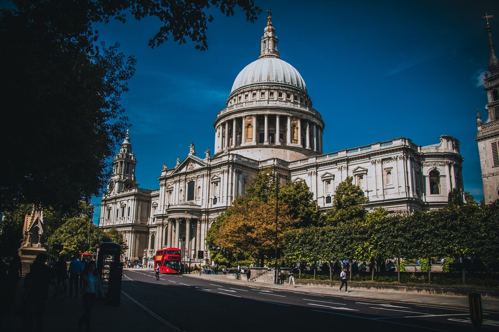

St Paul's to the Tower
Nine stops along the Thames. From the dome that survived the Blitz to the fortress that has stood for nearly a thousand years.
From the dome of St Paul's to the walls of the Tower. Three kilometres along the Thames, from the city Wren rebuilt to the fortress that stood before London as we know it existed.
You've seen what this tour is like. The next 6 stops go further. €4.99, yours to keep forever.
Unlock Full Tour - €4.99Payments powered by Lemon Squeezy & Stripe